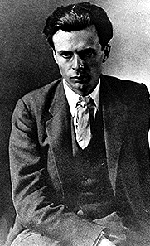
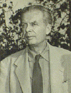
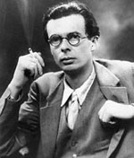
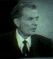

Undoubtedly, Huxley's heritage and upbringing had an effect on his work. Gerald Heard, a longtime friend, said that Huxley's ancestry "brought down on him a weight of intellectual authority and a momentum of moral obligations." Throughout Brave New World you can see evidence of an ambivalent attitude toward such authority assumed by a ruling class.
Like the England of his day, Huxley's Utopia possesses a rigid class structure, one even stronger than England's because it is biologically and chemically engineered and psychologically conditioned. And the members of Brave New World's ruling class certainly believe they possess the right to make everyone happy by denying them love and freedom.
Huxley's own experiences made him stand apart from the class into which he was born. Even as a small child he was considered different, showing an alertness, an intelligence, what his brother called a superiority. He was respected and loved--not hated--for these abilities, but he drew on that feeling of separateness in writing Brave New World. Bernard Marx and Helmholtz Watson, both members of the elite class, have problems because they're different from their peers. Huxley felt that heredity made each individual unique, and the uniqueness of the individual was essential to freedom. Like his family, and like the Alphas of Brave New World, Huxley felt a moral obligation--but it was the obligation to fight the idea that happiness could be achieved through class-instituted slavery of even the most benevolent kind.
Another event that marked Huxley was his mother's death from cancer when he was 14. This, he said later, gave him a sense of the transience of human happiness. Perhaps you can also see the influence of his loss in Brave New World. The Utopians go to great lengths to deny the unpleasantness of death, and to find perpetual happiness. But the cost is very great. By denying themselves unpleasant emotions they deny themselves deeply joyous ones as well. Their happiness can be continued endlessly by taking the drug soma by making love, or by playing Obstacle Golf, but this happiness is essentially shallow. Standing in contrast to the Utopians are the Savages on the Reservation in New Mexico: poor, dirty, subject to the ills of old age and painful death, but, Huxley seems to believe, blessed with a happiness that while still transient is deeper and more real than that enjoyed by the inhabitants of London and the rest of the World State.
When Huxley was 16 and a student at the prestigious school Eton, an eye illness made him nearly blind. He recovered enough vision to go on to Oxford University and graduate with honors, but not enough to fight in World War I, an important experience for many of his friends, or to do the scientific work he had dreamed of. Scientific ideas remained with him, however, and he used them in many of his books, particularly Brave New World. The idea of vision also remained important to him; his early novels contain scenes that seem ideal for motion pictures, and he later became a screenwriter.
He entered the literary world while he was at Oxford, meeting writers like Lytton Strachey and Bertrand Russell and becoming close friends with D. H. Lawrence, with whom you might think he had almost nothing in common.
Huxley published his first book, a collection of poems, in 1916. He married Maria Nys, a Belgian, in 1919. Their only child, Matthew Huxley, was born in 1920. The family divided their time between London and Europe, mostly Italy, in the 1920s, and traveled around the world in 1925 and 1926, seeing India and making a first visit to the United States.
Huxley liked the confidence, vitality, and "generous extravagance" he found in American life. But he wasn't so sure he liked the way vitality was expressed "in places of public amusement, in dancing and motoring... Nowhere, perhaps, is there so little conversation... It is all movement and noise, like the water gurgling out of a bath--down the waste. Yes, down the waste." Those thoughts of the actual world, from the book Jesting Pilate, were to color his picture of the perpetual happiness attempted in Brave New World.
His experiences in fascist Italy, where Benito Mussolini led an authoritarian government that fought against birth control in order to produce enough manpower for the next war, also provided materials for Huxley's bad Utopia, as did his reading of books critical of the Soviet Union.
Huxley wrote Brave New World in four months in 1931. It appeared three years after the publication of his best-seller, the novel Point Counter Point. During those three years, he had produced six books of stories, essays, poems, and plays, but nothing major. His biographer, Sybille Bedford, says, "It was time to produce some full-length fiction--he still felt like holding back from another straight novel--juggling in fiction form with the scientific possibilities of the future might be a new line."
Because Brave New World describes a bad Utopia, it is often compared with George Orwell's1984, another novel you may want to read, which also describes a possible horrible world of the future. The world of 1984 is one of tyranny, terror, and perpetual warfare. Orwell wrote it in 1948, shortly after the Allies had defeated Nazi Germany in World War II and just as the West was discovering the full dimensions of the evils of Soviet totalitarianism.
It's important to remember that Huxley wrote Brave New World in 1931, before Adolf Hitler came to power in Germany and before Joseph Stalin started the purges that killed millions of people in the Soviet Union. He therefore had no immediate real-life reason to make tyranny and terror major elements of his story. In 1958 Huxley himself said, "The future dictatorship of my imaginary world was a good deal less brutal than the future dictatorship so brilliantly portrayed by Orwell."
In 1937, the Huxleys came to the United States; in 1938 they went to Hollywood, where he became a screenwriter (among his films was an adaptation of Jane Austen's Pride and Prejudice, which starred the young Laurence Olivier). He remained for most of his life in California, and one of his novels caricatures what he saw as the strange life there: After Many a Summer Dies the Swan. In it the tycoon Jo Stoyte tries to achieve immortality through scientific experimentation, even if it means giving up humanity and returning to the completely animal state--an echo of Brave New World.
In 1946 Huxley wrote a Foreword to Brave New World in which he said he no longer wanted to make social sanity an impossibility, as he had in the novel. Though World War II had caused the deaths of some 20 million inhabitants of the Soviet Union, six million Jews, and millions of others, and the newly developed atomic bomb held the threat of even more extensive destruction, Huxley had become convinced that while still "rather rare," sanity could be achieved and said that he would like to see more of it. In the same year, he published The Perennial Philosophy, an anthology of texts with his own commentaries on mystical and religious approaches to a sane life in a sane society.
He also worried about the dangers that threatened sanity. In 1958, he published Brave New World Revisited, a set of essays on real-life problems and ideas you'll find in the novel--overpopulation, overorganization, and psychological techniques from salesmanship to hypnopaedia, or sleep-teaching. They're all tools that a government can abuse to deprive people of freedom, an abuse that Huxley wanted people to fight. If you want to further relate his bad new world to the real world, read Brave New World Revisited.
In the 1950s Huxley became famous for his interest in psychedelic or mind-expanding drugs like mescaline and LSD, which he apparently took a dozen times over ten years. Sybille Bedford says he was looking for a drug that would allow an escape from the self and that if taken with caution would be physically and socially harmless.
He put his beliefs in such a drug and in sanity into several books. Two, based on his experiences taking mescaline under supervision, were nonfiction: Doors of Perception (1954) and Heaven and Hell (1956). Some readers have read those books as encouragements to experiment freely with drugs, but Huxley warned of the dangers of such experiments in an appendix he wrote to The Devils of Loudun (1952), a psychological study of an episode in French history.
Another work centering on drugs and sanity was Island (1962), a novel that required 20 years of thought and five years of writing. Among other things, Island was an antidote to Brave New World, a good Utopia. Huxley deplored the drug he called soma in Brave New World--half tranquilizer, half intoxicant--which produces an artificial happiness that makes people content with their lack of freedom. He approved of the perfected version of LSD that the people of Island use in a religious way.
Huxley produced 47 books in his long career as a writer. The English critic Anthony Burgess has said that he equipped the novel with a brain. Other critics objected that he was a better essayist than novelist precisely because he cared more about his ideas than about plot or characters, and his novels' ideas often get in the way of the story.
But Huxley's emphasis on ideas and his skin as an essayist cannot hide one important fact: The books he wrote that are most read and best remembered today are all novels--Crome Yellow, Antic Hay, and Point Counter Point from the 1920s, Brave New World and After Many a Summer Dies the Swan from the 1930s. In 1959 the American Academy of Arts and Letters gave him the Award of Merit for the Novel, a prize given every five years; earlier recipients had been Ernest Hemingway, Thomas Mann, and Theodore Dreiser.
The range of Huxley's interests can be seen from his note that his "preliminary research" for Island included "Greek history, Polynesian anthropology, translations from Sanskrit and Chinese of Buddhist texts, scientific papers on pharmacology, neurophysiology, psychology and education, together with novels, poems, critical essays, travel books, political commentaries and conversations with all kinds of people, from philosophers to actresses, from patients in mental hospitals to tycoons in Rolls-Royces...." He used similar, though probably fewer, sources for Brave New World.
This list gives you some perspective on the wide range of ideas that Huxley studied. He also wrote an early essay on ecology that helped inspire today's environmental movement. And he was a pacifist. This belief prevented him from becoming an American citizen because he would not say his pacifism was a matter of his religion, which might have made him an acceptable conscientious objector.
Huxley remained nearly blind all his life. Maria Huxley died in 1955, and Huxley married Laura Archera a year later. He died November 22, 1963, the same day that President John F. Kennedy was assassinated. He was cremated, and his ashes were buried in his parents' grave in England.